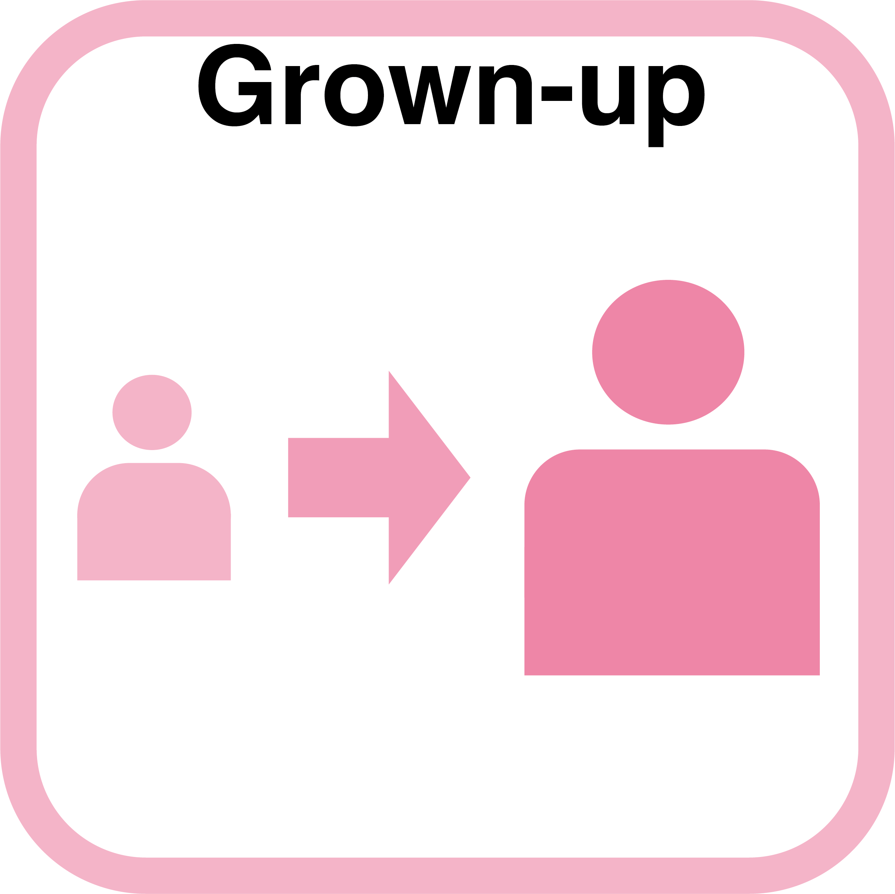

2024年度 駒場祭展示
企画名 「つくる」から人と科学を考える
2024年度の駒場祭（第75回駒場祭）では、「ちぐはぐさに、あふれる世界で」というテーマのもとで、
過去最大級の全13展示を出展しました。
日頃感じている「ちぐはぐさ」との付き合い方を考えてみたり、気が付かない間に生じている
「ちぐはぐさ」をじっくり捉えてみたり、「ちぐはぐ」の感覚を楽しんでみたり。
訪れてくださった皆さんと一緒に、様々な方法で「ちぐはぐさ」を捉えることができました。
また、今回は「日常を見つめ直す」「誰かと話す」「価値観を掘り下げる」「社会を想像する」という
4つのセクションに会場を分けています。
興味を持ったセクションを覗くところから、ご参加くださった方もいらっしゃいました。
さらに、セクション内外での展示同士の繋がりも、今回の駒場祭の魅力の一つです。
イベント情報
- 日時：2024年11月22日（金）〜 11月24日（日）
- 会場：東大駒場キャンパス KOMCEE West K303
- 形式：ブース形式の体験・創作型展示
List of Works
アイコンか展示名を押すと、詳細が見られます
＜日常を見つめ直す＞

「まだ」と「もう」の境目
どうしたら年齢にとらわれず、相手を理解できる?

＜価値観を掘り下げる＞
童話の「当たり前」の裏側
人による「当たり前」の違いは、
どんな社会問題を形作る？
＜社会を想像する＞

＜誰かと話す＞

デマとたたかう
誤った情報の広がりを、どうやって止められる?